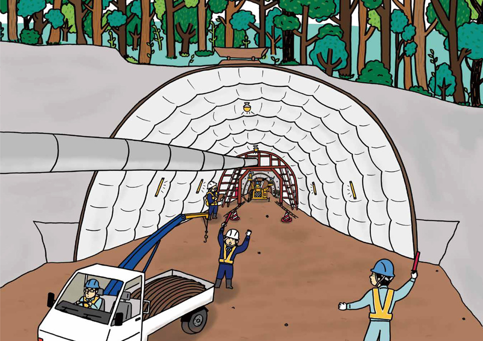

期末實作測試 學號:91135153 姓名:江芯柔
土木工程介紹
隧道工程
1.勘查與設計
- 地質勘察：了解地質條件，包括岩層結構、地下水位、土壤性質等。
- 環境評估：評估施工對環境的影響，並制定相應的環保措施。
- 設計方案：根據勘察結果設計隧道的結構、形狀、尺寸及施工方法。
2.施工方法
- 鑽爆法：在岩石隧道中常用，通過爆破岩石形成隧道。
- 盾構法：利用盾構機在軟土層中推進，常用於城市地鐵和地下管線建設。
- 明挖法：先挖開地面，再建造隧道，最後回填，適用於淺埋隧道。
- 沉管法：預製管段後沉入水底或土中，適用於河底隧道或海底隧道。

3.施工管理
- 質量控制：確保施工質量符合設計要求，防止滲水、塌方等問題。
- 進度管理：合理安排施工進度，確保項目按時完成。
- 安全管理：制定安全措施，防止施工事故，保障工人安全。
4.維護與管理
- 定期檢查：定期檢查隧道結構，發現並修復損壞部分。
- 監測系統：安裝監測設備，實時監測隧道的變形、漏水等情況。
- 緊急預案：制定應急預案，應對突發情況如地震、水災等。